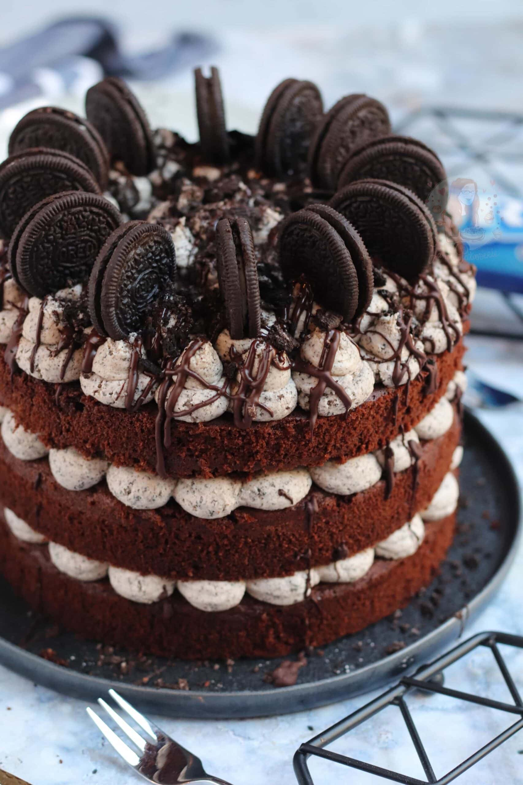

Oreo Cake Recipie

Description
This decadent no-bake Oreo cake is a chocolate lover's dream, featuring layers of crushed Oreo cookie crust, a rich, creamy filling packed with cookie pieces, and a generous topping of whipped cream and more Oreos. It's an easy-to-make dessert that's perfect for any occasion and guaranteed to satisfy your sweet tooth.
Oreo Cake (No-Bake)
- Prepare Crust: Crush Oreos finely, mix with melted butter, and press into a springform pan. Chill.
- Make Filling: Beat cream cheese until smooth, then mix in powdered sugar, vanilla, and whipped cream. Fold in chopped Oreos.
- Assemble: Spread the filling over the chilled crust.
- Chill: Refrigerate for at least 4-6 hours, or until firm.
- Decorate & Serve: Top with whipped cream and additional crushed or whole Oreos before serving.
Back Home